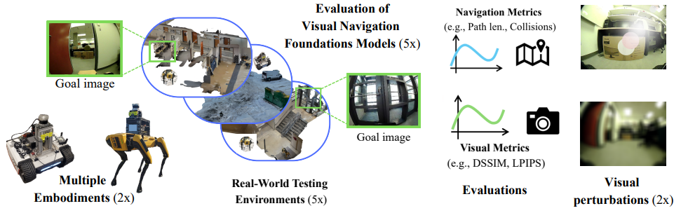
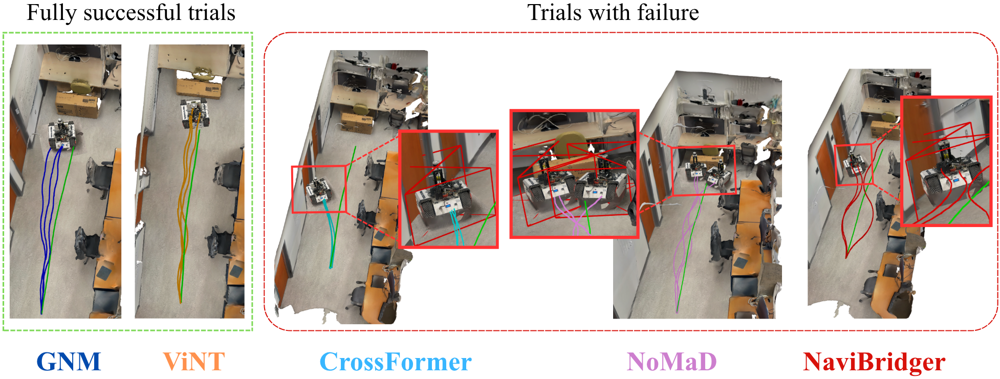
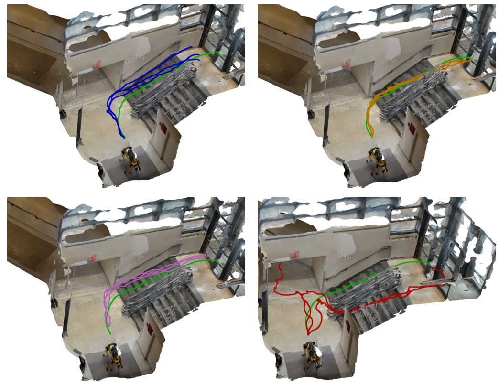

Visual Navigation Models (VNMs) promise generalizable, robot navigation by learning from large-scale visual demonstrations. Despite growing real-world deployment, existing evaluations rely almost exclusively on success rate, whether the robot reaches its goal, which conceals trajectory quality, collision behavior, and robustness to environmental change.
We present a real-world evaluation of five state-of-the-art VNMs (GNM, ViNT, NoMaD, NaviBridger, and CrossFormer) across two robot platforms and five environments spanning indoor and outdoor settings. Beyond success rate, we combine path-based metrics with vision-based goal-recognition scores and assess robustness through controlled image perturbations (motion blur, sunflare).
Our analysis uncovers three systematic limitations: (a) even architecturally sophisticated diffusion and transformer-based models exhibit frequent collisions, indicating limited geometric understanding; (b) models fail to discriminate between different locations that are perceptually similar, causing goal prediction errors in repetitive environments; and (c) performance degrades under distribution shift.

Three systematic limitations identified across all evaluated architectures:
Even diffusion and transformer-based models exhibit frequent collisions. Architectural sophistication does not guarantee safe navigation.
Models fail to discriminate between perceptually similar locations, causing premature or incorrect goal predictions.
Performance degrades noticeably under motion blur, sunflare, and out-of-distribution environments (e.g., snow).
A surprising result: Simpler architectures (GNM/MobileNetV2) match complex transformer and diffusion models across several metrics, we hypothesize that data insufficiency limits the newer models more than architectural capacity.
Short-horizon, straight-line trajectory (3.75m, Bunker) toward a cardboard box target.


Full office loop trajectory (27.96m, Bunker) with desks, chairs, and repetitive features.
The robot needs to achieves a loop around the office, without colliding with any obstacles (chairs, desks, pillars).
As the navigation model processes real-time camera inputs, it needs to closely match the reference path to avoid obstacles. We hypothesize that VNMs are learning to match their current observation with the sub-goal/goal image, but they can struggle to generalize to new viewpoints and lighting conditions, leading to collisions or misalignment with the path.
In our evaluation, the models sometimes collided along their path or incorrectly reported reaching the goal. While some did manage to complete the route on occasion, these failures show that current VNMs aren't quite ready for reliable real-world navigation and need stronger robustness and generalization.
Evaluating the models against visual ambiguities, with two identical staircases.


Testing VNM robustness against severe visual distributional shifts.
@misc{guerrier2026visionfoundationmodelsnavigate,
title = {Can Vision Foundation Models Navigate? Zero-Shot Real-World Evaluation and Lessons Learned},
author = {Maeva Guerrier and Karthik Soma and Jana Pavlasek and Giovanni Beltrame},
year = {2026},
eprint = {2603.25937},
archivePrefix = {arXiv},
primaryClass = {cs.RO},
url = {https://arxiv.org/abs/2603.25937},
}